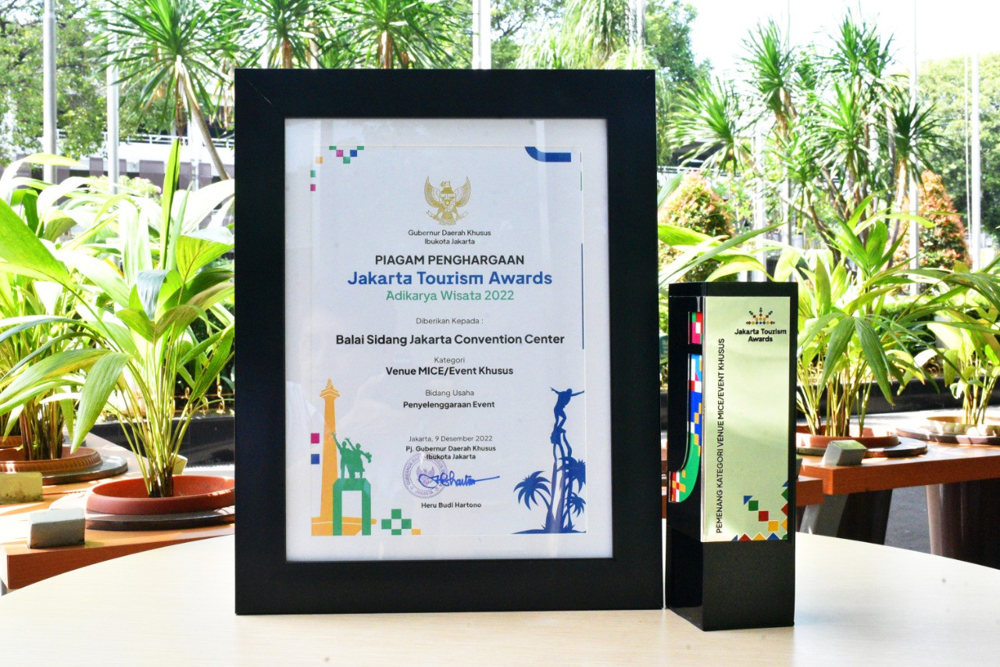
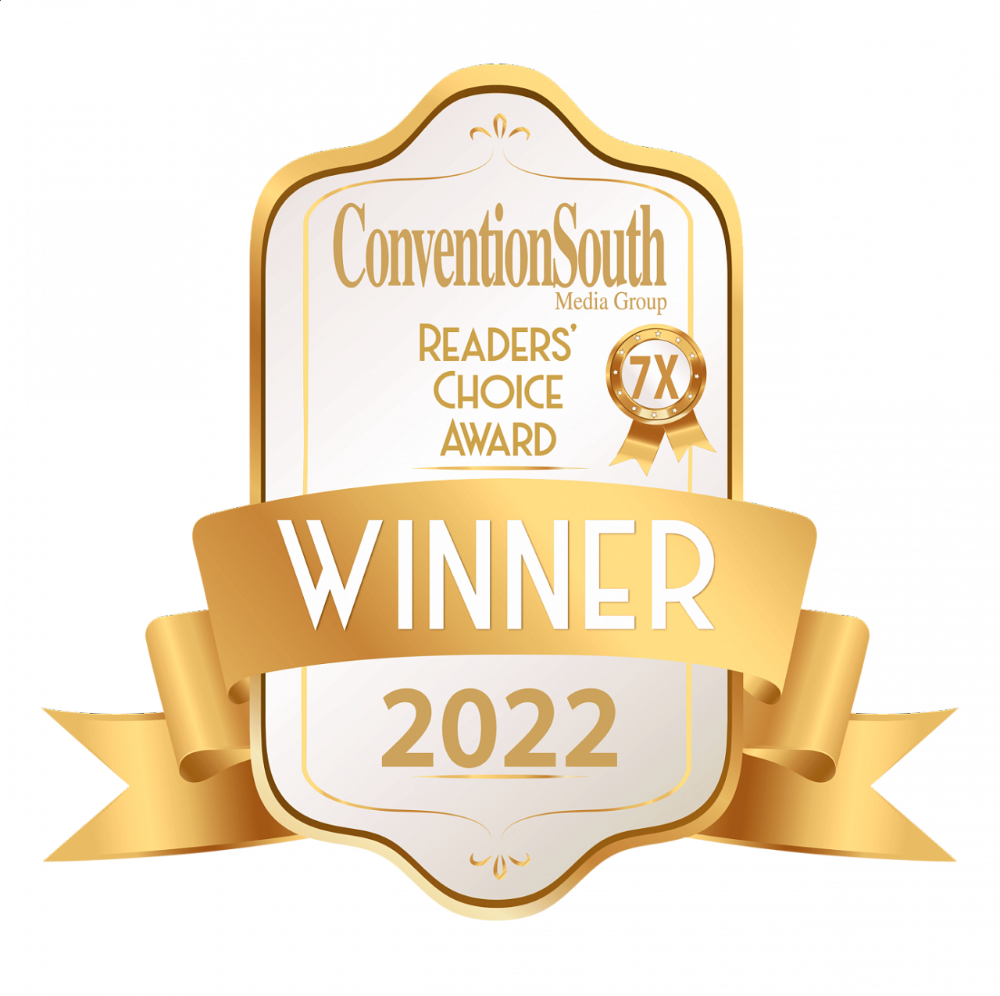
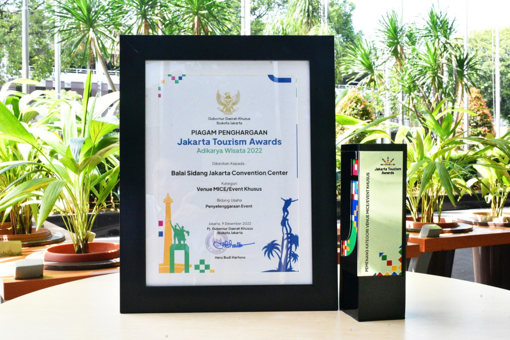
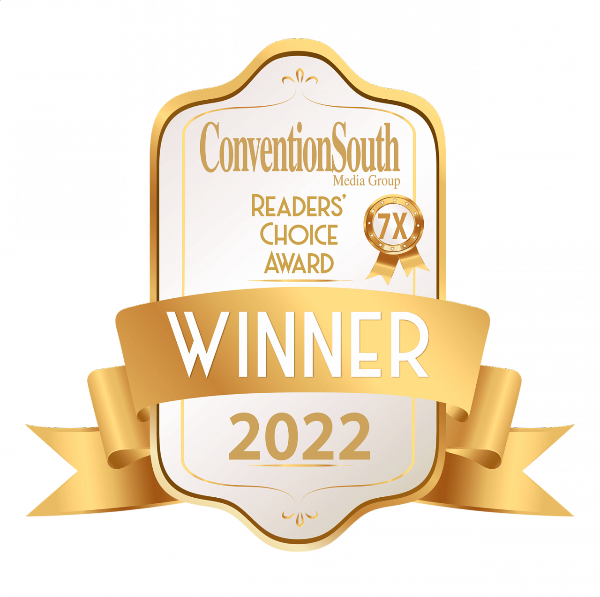

Welcome to Jockey’s Convention Center, where exceptional events come to life! We pride ourselves on being a premier venue for many important national and international conference, exhibition, fair, indoor sports, and musical concerts located in Jakarta. With state-of-the-art facilities, dedicated staff, and a commitment to excellence, we strive to create memorable experiences for our clients and attendees. At our Convention Center, we understand the significance of a well-planned event. Whether you're organizing a corporate conference, hosting an industry expo, or arranging a social gala, our versatile spaces are designed to accommodate events of all sizes and types. From intimate boardrooms to expansive exhibition halls, we have the perfect venue to suit your needs.
Our team of experienced event professionals is dedicated to providing you with outstanding service from start to finish. We work closely with our clients to understand their vision and objectives, ensuring that every detail is carefully executed. From event planning and logistics to audiovisual setup and catering arrangements, we are committed to delivering seamless experiences that exceed expectations. The Convention Center boasts cutting-edge technology and infrastructure to support the most demanding events. Our modern facilities feature advanced audiovisual capabilities, high-speed internet connectivity, and flexible room configurations. Whether you require theater-style seating, classroom arrangements, or custom layouts, our team will assist you in optimizing the space to maximize engagement and productivity.
The history of Jockey's Convention Center is rich with tradition and legacy. Established in the heart of the bustling city, our center has been a hub for events and gatherings since its inception. The story begins over five decades ago when a visionary group of jockeys came together with a shared dream of creating a dedicated space for equestrian enthusiasts and professionals to connect and celebrate their passion.
In 1974, after years of planning and perseverance, the doors of Jockey's Convention Center first swung open. The center quickly became synonymous with excellence in the equestrian community, hosting prestigious events such as horse racing conferences, equine trade shows, and international jockey competitions. The grandeur of the facility, coupled with the professionalism of the staff, elevated Jockey's Convention Center to a renowned venue known for its unwavering commitment to the equine world.
Over the years, Jockey's Convention Center has continued to evolve and adapt to the changing needs of the industry. Renovations and expansions have enhanced the center's capabilities, offering state-of-the-art facilities and cutting-edge technology. This commitment to staying at the forefront of the industry has solidified Jockey's Convention Center as a leading destination for equestrian events, attracting enthusiasts, professionals, and industry leaders from around the globe.
As we move forward, Jockey's Convention Center remains committed to its founding principles of excellence, innovation, and community. We continue to strive for greatness, providing unparalleled service, and creating unforgettable experiences for our guests. With each event that takes place within our walls, we honor the rich history of this iconic venue and set the stage for a future that embraces the excitement and vibrancy of the equestrian world.


 


